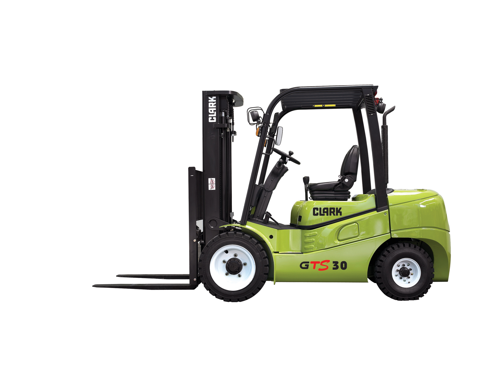
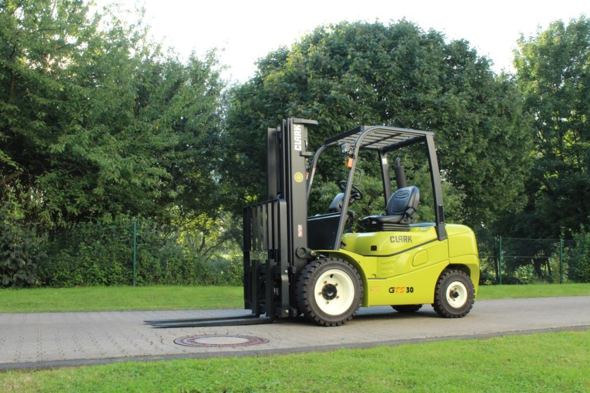
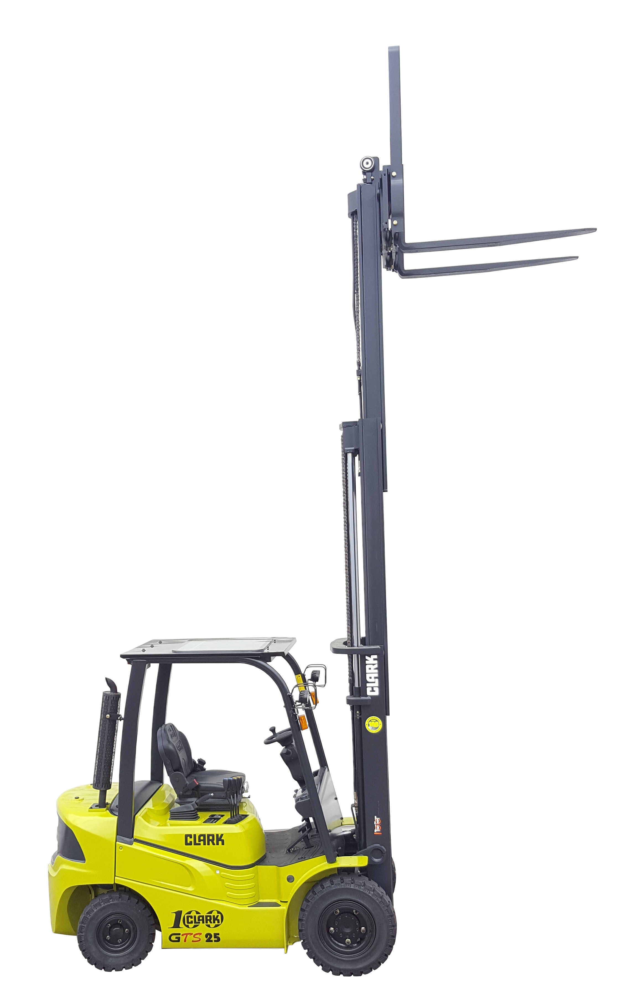

Gustavo olhava para o relógio: 14h20. O caminhão carregado esperava na doca desde as 13h. A empilhadeira antiga — uma máquina de gasolina com quase 8 mil horas no hodômetro — estava parada de novo. Terceira vez no mês. O mecânico dizia que era o carburador. O supervisor de logística dizia que era custo. O dono da empresa dizia que precisava de uma solução.
Gustavo foi pesquisar empilhadeiras GLP. Encontrou a Clark GTS Series.
Três semanas depois, a doca nunca mais esperou.
Empilhadeira Clark GTS25 / GTS30 / GTS33 — Série GLP para Armazéns e Distribuição
Empilhadeira contrabalançada a GLP com capacidade de 2.500 a 3.300 kg, motor PSI 4G64 de 63 HP e raio de giro de 2.290 mm. Ideal para armazéns, centros de distribuição e operações industriais de médio porte em Goiânia e Centro-Oeste.

Clark GTS25 — 2.500 kg de capacidade, motor GLP PSI 4G64, raio de giro 2.290 mm
Por que a Clark GTS Series?
Motor PSI 4G64 a GLP: 63 HP com torque constante para turnos de 8 horas sem queda de performance
Raio de giro compacto: 2.290 mm — opera em corredores de 3,5 m onde concorrentes não entram
Autonomia real por turno: 6 a 8 horas com um único tanque, sem parada para reabastecimento
GLP 35% mais econômico: custo por hora inferior à gasolina em operações contínuas
Freio a disco banhado a óleo: zero manutenção preventiva de freio por até 10.000 horas
63 HPMotor PSI 4G64 GLP — torque para alto ciclo
2.290 mmRaio de giro mínimo (GTS25) — corredor estreito
3.300 kgCapacidade máxima da série (GTS33)
GTS25, GTS30 ou GTS33: qual modelo serve à sua operação
A Clark GTS Series cobre a faixa de 2.500 a 3.300 kg com três modelos distintos. Cada um foi dimensionado para um perfil de operação. A escolha errada significa pagar por capacidade que não usa ou solicitar mais do que a máquina entrega.
Comparativo Clark GTS Series — Modelos e capacidades
Modelo
Capacidade
Combustível
Raio de giro
Perfil de uso
Clark GTS25
2.500 kg
GLP / Gasolina
2.290 mm
Distribuição leve, farmácia, alimentos
Clark GTS30
3.000 kg
GLP / Gasolina
2.380 mm
Atacadista, manufatura média
Clark GTS33
3.300 kg
GLP / Gasolina
2.480 mm
Metalurgia leve, cargas densas
GLP ou Gasolina? Para operações acima de 4 horas por dia, o GLP reduz o custo por hora em 30 a 35% frente à gasolina. O ponto de equilíbrio costuma ser alcançado em menos de 6 meses. Para operações curtas e esporádicas, a versão gasolina elimina a logística do cilindro.
Escolher o modelo certo é o ponto de partida. Mas o que sustenta o desempenho da série por anos é o motor.
Motor PSI 4G64: 63 HP de torque para turnos longos
A GTS Series usa o motor PSI 4G64 — quatro cilindros, refrigerado a água, com injeção eletrônica de GLP. A potência é de 51,6 kW (63 HP a 2.500 rpm), com torque dimensionado para operações de alto ciclo em armazém.
O ponto crítico não é o HP de pico. É a constância. Motores carburadores perdem eficiência depois da segunda hora, especialmente em dias quentes. O PSI 4G64 mantém a mesma resposta do início ao fim do turno. Oito horas. Sem perda.
E isso tem impacto direto na produtividade.
Uma empilhadeira que responde com 10% menos torque na sexta hora é uma empilhadeira que faz 10% menos ciclos. Em um armazém com 200 movimentos por turno, isso é 20 paletes perdidos por dia. Sem contar as filas na doca.
Intervalo de manutenção: Troca de óleo a cada 250 horas. Filtro de ar de duplo estágio com indicador de saturação — sinaliza quando precisa de troca, sem depender de calendário. Custo operacional previsível, sem surpresas.
Motor constante garante ciclos consistentes. Mas ciclo rápido só é possível com raio de giro compacto.
Raio de giro 2.290 mm: o corredor estreito não é problema
O raio de giro mínimo da GTS25 é de 2.290 mm. Traduzindo para operação: corredor de 3,5 m já é suficiente para manobra completa. A maioria dos armazéns antigos foi construída com corredores de 3,5 a 4 m. A maioria das empilhadeiras convencionais da mesma faixa de capacidade exige 4,5 m ou mais.
Essa diferença não é um número. É um rack a mais na fileira. É 15% mais posições de armazenagem no mesmo galpão. São R$ 80.000 a R$ 150.000 em obras de ampliação que não precisam acontecer.
Mas fica melhor.

GTS25 em operação — raio de giro 2.290 mm, corredor mínimo de 3,5 m
A transmissão automática POWERSHIFT cuida da reversão. Sem choque mecânico, sem desgaste brusco. O operador inverte direção sem tirar a mão do volante. Em operações de 150 a 200 reversões por turno, essa diferença se traduz em menos fadiga, menos erro e menos manutenção na transmissão.
Raio compacto, reversão suave. O próximo fator que determina o custo total de propriedade é o freio.
Freio a disco banhado a óleo: manutenção zero por anos
O freio da Clark GTS Series é do tipo Wet Disc Brake — disco banhado a óleo, totalmente encapsulado. Protegido contra pó, umidade e impactos. Vida útil de até 10.000 horas de operação.
10.000 horas. Em dois turnos por dia, isso são aproximadamente cinco anos sem tocar no sistema de freio. Nenhuma revisão. Nenhuma troca de pastilha. Nenhuma surpresa na nota do mecânico.
Comparativo de custo: Um freio a tambor convencional exige revisão a cada 1.000 a 2.000 horas. Na faixa da GTS Series, cada revisão custa entre R$ 2.500 e R$ 4.500. Em 5 anos de operação intensa, a economia acumulada com o Wet Disc Brake fica entre R$ 12.500 e R$ 45.000 — só em manutenção de freio.
O freio de estacionamento é automático — sistema Dead Man. Quando o operador levanta do assento, o freio engaja automaticamente. Sem ação manual. Sem esquecimento. Norma NR-11 atendida sem depender do comportamento do operador.
Freio que não gera custo é freio que protege a margem. Agora, onde a GTS Series opera melhor?
Onde a Clark GTS Series entrega melhor resultado
A série GTS foi dimensionada para operações industriais e logísticas de médio porte — ambientes indoor com ventilação, cargas de paletes até 3,3 toneladas, turnos longos com alta frequência de ciclos.
01Centros de distribuição e atacadistas
Corredores de 3,5 a 4,5 m, alto ciclo, abastecimento de caminhões na doca. A GTS25 entra onde outras não entram. A GTS33 carrega o que outras não carregam.
02Indústria alimentícia e de bebidas
Paletes de produtos embalados, turnos de 8 horas, exigência de performance constante. O motor GLP reduz emissões em relação à gasolina — mais confortável para operadores em galpões fechados.
03Metalurgia leve e manufatura
Peças, componentes e materiais de até 3,3 toneladas. A GTS33 cobre essa faixa com margem de segurança. Operação em chão com pequenas irregularidades — a transmissão POWERSHIFT absorve sem impacto.
04Farmácias, laboratórios e química
Ambientes com corredores estreitos, paletes leves a médios, exigência de precisão na elevação. A GTS25 é precisa e compacta para esse perfil.

GTS30 em centro de distribuição — 3.000 kg, transmissão POWERSHIFT, corredor compacto
Contexto de uso define qual modelo faz sentido. As especificações técnicas completas ajudam a confirmar a escolha.
Altura de elevação e torre: A GTS Series aceita torres Duplex, Triplex e Quadruplex. A altura máxima de elevação varia conforme a especificação do pedido. Para operações com racks altos (acima de 4 m), informe a altura necessária ao solicitar proposta.
Números confirmam a escolha. O próximo passo é saber como adquirir a máquina certa para a sua operação em Goiânia.
Como comprar a Clark GTS Series em Goiânia e Centro-Oeste
A Move Máquinas é o canal oficial Clark para venda e locação de empilhadeiras em Goiânia e no Centro-Oeste. O processo de aquisição é direto — sem intermediários, sem burocracia desnecessária.
1Solicite proposta: preencha o formulário com o modelo e a aplicação. Retorno em até 1 dia útil.
2Demonstração técnica: agendamos visita ao seu galpão para validar o modelo no seu corredor real.
3Proposta comercial: venda à vista, parcelamento ou locação mensal com manutenção inclusa.
4Documentação e entrega: suporte completo em NF, registro e manual em português.
5Suporte pós-venda: mecânico em até 4 horas em Goiânia. Peças Clark originais em estoque.
Locação disponível: Para operações com demanda variável ou contratos de projeto, a Move Máquinas oferece locação mensal da Clark GTS Series com manutenção preventiva inclusa. Ideal para empresas que não querem imobilizar capital em ativo fixo.
O processo é simples. As perguntas mais comuns aparecem logo abaixo.
Gustavo — o mesmo supervisor que assistia o caminhão esperar na doca — recebeu a GTS30 três semanas após solicitar a proposta. Na primeira semana, zero paradas não planejadas. No final do mês, a produtividade da doca subiu 18%. O mecânico ainda aparece. Mas agora é para a manutenção preventiva agendada.
Perguntas frequentes sobre a Clark GTS Series
A Clark GTS Series opera em ambientes fechados?
Sim, com ventilação adequada. A versão GLP produz menos emissões que a gasolina, sendo indicada para ambientes semi-fechados com ventilação natural ou forçada. Para ambientes totalmente fechados sem ventilação, a versão elétrica da linha Clark é mais indicada.
Qual a diferença entre GTS25, GTS30 e GTS33?
Exclusivamente a capacidade nominal: 2.500 kg, 3.000 kg e 3.300 kg respectivamente. O motor PSI 4G64, a transmissão POWERSHIFT e o freio a disco são os mesmos nos três modelos. O raio de giro aumenta ligeiramente com a capacidade.
Qual a autonomia real por turno a GLP?
6 a 8 horas com um único cilindro de GLP, dependendo da intensidade dos ciclos. Em operações de alto ciclo (mais de 150 movimentos por turno), considere ter um cilindro reserva disponível para evitar parada.
A Clark GTS Series atende a NR-11?
Sim. O freio de estacionamento automático Dead Man, o guarda-cabeça homologado e os dispositivos de segurança da série atendem integralmente à NR-11 e à NR-12.
Qual a frequência de manutenção?
Troca de óleo do motor a cada 250 horas. O filtro de ar de duplo estágio tem indicador de saturação — troca sob demanda, não por calendário. O freio a disco não exige manutenção preventiva até 10.000 horas. A manutenção preventiva padrão é mais simples e menos frequente que a de máquinas equivalentes com motor a gasolina.
A Move Máquinas entrega em todo o Centro-Oeste?
Sim. A Move Máquinas atende Goiânia e toda a região Centro-Oeste com entrega, suporte técnico presencial e peças originais Clark. Prazo de proposta em até 1 dia útil para qualquer cidade da região.
É possível testar a máquina antes de comprar?
Sim. A Move Máquinas agenda demonstração técnica no seu galpão — com o modelo real e nas condições de operação da sua empresa. Sem custo, sem compromisso de compra imediato.
Solicite proposta de compra — Clark GTS Series
Informe o modelo e a aplicação. A Move Máquinas retorna em até 1 dia útil com proposta de compra ou locação para Goiânia e Centro-Oeste.